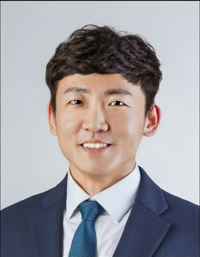

이영수 (Young su Lee), Assistant Professor / Lab Director
교수 개인 소개 페이지: https://prof.sejong.ac.kr/ysl
[경력 / Experience]
- 2025.03. - 현 재. 세종대학교 환경융합공학과 조교수 (Assistant Professor, Department of Environmental and Energy, Sejong University, Seoul, Republic of Korea)
- 2023.09. - 2025.02. 순천향대학교 에너지환경공학과 조교수 (Assistant Professor, Department of Energy & Environmental Engineering, Soonchunhyang University, Asan, Republic of Korea)
- 2023.03. - 2023.08. 삼성전자 주식회사 (Samsung Electronics Co., Ltd., Republic of Korea)
- 2015.12. - 2018.06. ㈜삼천리이에스 (Samchully ES Co., Ltd., Republic of Korea)
[학력 / Education]
- 2019.03. - 2023.02. 공학 박사, 서울대학교 건설환경공학부 (지도교수: 김재영) (Ph.D. in Engineering, Department of Civil and Environmental Engineering, Seoul National University, Advisor: Jae Young Kim)
- 2013.09. - 2015.08. 공학 석사, 서울대학교 건설환경공학부 (지도교수: 김재영) (M.S. in Engineering, Department of Civil and Environmental Engineering, Seoul National University, Advisor: Jae Young Kim)
- 2007.03. - 2013.08. 공학사, 서울대학교 건설환경공학부 (B.S. in Engineering, Department of Civil and Environmental Engineering, Seoul National University)